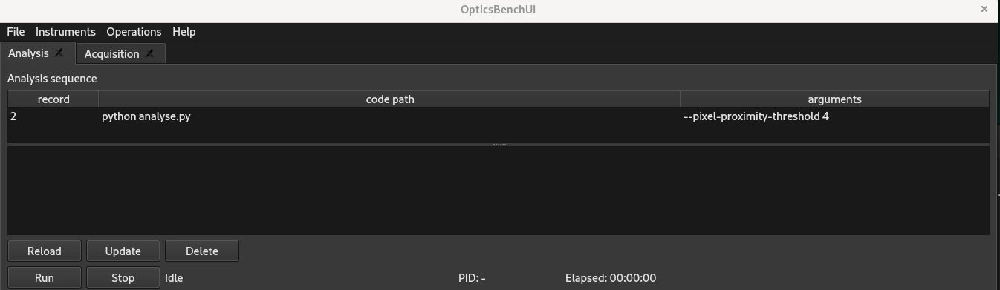

Analysis tasks are external commands executed after or independently from acquisition. Each task is defined in the analysis_sequence table stored in analysis.db3.
| record | Execution order (non-negative). Tasks run in ascending order. |
| code path | Full path to the executable or script to run. |
| arguments | Arguments passed to the command (space-separated). |
To trigger analysis automatically after a specific acquisition row, add ANALYSIS=START to the acquisition settings column. This will execute the analysis task list in the background.
